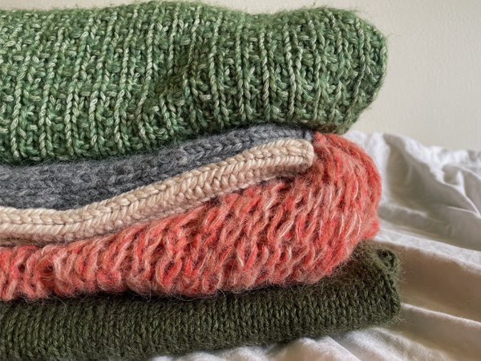

 Strik dig glad Det er ikke nogen hemmelighed at strik igen er blevet yderst populært hen over de seneste par år. Især efter corona er mange nye strikkere kommet til og har opdaget, hvor hyggeligt det er at sidde med sit strikketøj...
Gåture i det fri Er dit hoved fyldt med tanker og har du svært ved at finde ro? Tankerne kan hurtigt samle sig i en hverdag, hvor der både skal være plads til studie, venner, pauser og alt for meget andet...
Madplanlægning Et af de helt store chok jeg fik da jeg flyttede ud var, hvor svært det er at finde på noget spændende aftensmad hver dag. Det var lidt nemmere da man stadig boede hjemme...